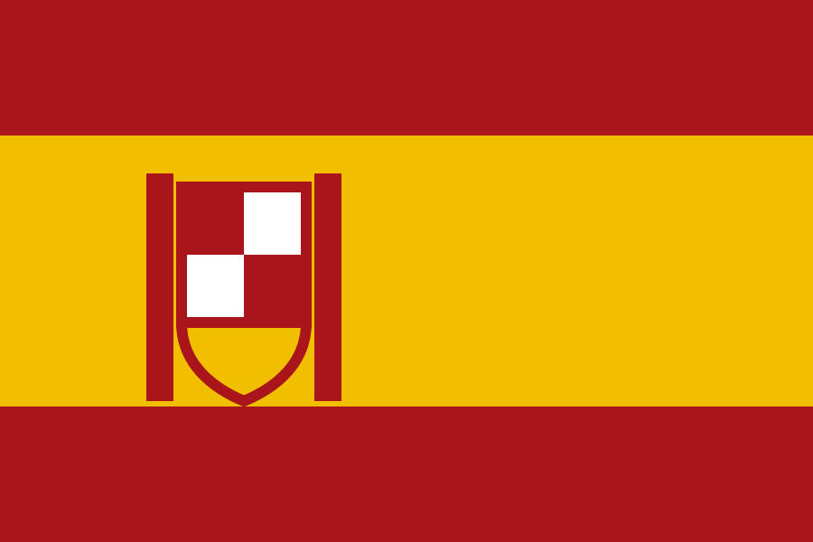

Länderakte Spanien
Rechtsfähig – aber ausdrücklich nicht unverletzlich
Spanien gehört zu den rechtlich am detailliertesten dokumentierten Fällen dieser Recherche. Das Abkommen von 2001 regelt reziprok das Instituto Cervantes in Moskau und das russische Zentrum in Madrid, verleiht den Zentren die Rechte juristischer Personen, unterstellt sie dem Recht des Gaststaats – und stellt ausdrücklich klar, dass die Räume nicht diplomatisch unverletzlich sind. Damit ist Spanien der nützlichste Rechtsvergleich für die deutsche Debatte.
Aktiver offizieller Standort
Präsenzumfang offen
Kurzbefund
| Einrichtung |
Russisches Haus Madrid (Casa de Rusia) |
| Ort |
Calle Alcalá 61, Madrid |
| Abkommen |
Zentrumsabkommen unterzeichnet am 15. November 2001 in Madrid; in Kraft seit 23. Mai 2002, veröffentlicht im BOE Nr. 148 vom 21. Juni 2002 |
| Protokoll |
Änderungsprotokoll vom 24. September 2007, vollständig in Kraft seit 10. März 2009; konkretisiert Bildungs-, Steuer- und Kontrollfragen |
| Rechtsstellung |
Das Abkommen verleiht den Zentren die Rechte juristischer Personen und unterstellt sie grundsätzlich dem Recht des Gaststaats. Ob es eine eigenständige Rechtsperson begründet oder nur Rechtsfähigkeit für den Betrieb gewährt, bleibt der Einzelfallauslegung vorbehalten |
| Unverletzlichkeit |
Ausdrücklich ausgeschlossen. Der Vertrag stellt klar, dass die Räume nicht diplomatisch unverletzlich sind |
| Aufnahme der Tätigkeit |
2011 |
| Maßnahmen |
Ausweisung von rund 25 russischen Diplomaten und Botschaftsmitarbeitern am 5. April 2022; Königliches Gesetzesdekret 9/2022 zur nationalen Umsetzung. Keine Zuordnung zum Haus gefunden |
| Status August 2026 |
Weiterhin aktiv. Die Website nennt Leitung, Kurse und Bibliothek; das Quotenverfahren lief mit Fristen bis Februar 2026. Ein datierter Präsenztermin im Haus für 2026 wurde nicht gefunden |
| Abzugrenzen |
Die „Casa de Rusia“ in Alicante ist nach den geprüften Quellen nicht mit dem offiziellen Madrider Zentrum identisch |
Drei Trennlinien, die der spanische Vertrag zieht
Erstens: Rechtsfähigkeit bedeutet nicht diplomatische Unverletzlichkeit – der Vertrag schließt sie für die Räume ausdrücklich aus. Zweitens: Privilegien sind funktions- und akkreditierungsabhängig; nur akkreditierte Leitung kann diplomatische Privilegien erhalten. Drittens: Sanktionsvollzug und Vertragsbeendigung bleiben getrennt – Spanien kann EU-Vermögensregeln vollziehen, ohne das Abkommen zu kündigen. Leseregel: „Offen“ bedeutet, dass eine Aussage in den geprüften öffentlichen Quellen nicht belegt ist. Das ist kein Beweis des Gegenteils. EU-Listung, nationaler Vollzug, politische Nichtkooperation, Vertragskündigung und tatsächliche Betriebsschließung werden getrennt bewertet.
Chronologie
11. April 1994
Allgemeines Kultur- und Bildungsabkommen zwischen Spanien und Russland.
15. November 2001
Unterzeichnung des Zentrumsabkommens in Madrid. Es regelt reziprok das Instituto Cervantes in Moskau und das russische Zentrum in Madrid.
23. Mai 2002
Inkrafttreten nach der letzten innerstaatlichen Notifikation.
21. Juni 2002
Veröffentlichung im Boletín Oficial del Estado Nr. 148.
24. September 2007
Unterzeichnung des Änderungsprotokolls in Moskau; nach seinem Artikel 2 vorläufig ab Unterzeichnung anwendbar, ausgenommen Artikel 1 Absatz 6.
10. März 2009
Vollständiges Inkrafttreten des Protokolls; die Mitteilung erscheint am 8. April 2009 im BOE Nr. 86.
2011
Aufnahme der Tätigkeit des Russischen Hauses in Madrid.
5. April 2022
Spanien beschließt die Ausweisung von rund 25 russischen Diplomaten und Botschaftsmitarbeitern. Die Regierung nennt Sicherheitsinteressen und die Verbrechen in Butscha und Mariupol als Gründe. Eine Zuordnung zum Haus wurde nicht gefunden.
26. April 2022
Das Königliche Gesetzesdekret 9/2022 schafft und ergänzt nationale Mechanismen zur Umsetzung EU-rechtlicher Immobilisierungen im Zusammenhang mit dem Ukrainekrieg. Nicht hausbezogen.
21. Juli 2022
Die EU listet Rossotrudnitschestwo.
28. und 29. November 2024
Offene Bildungstage und weitere datierte Veranstaltungen in den eigenen Räumen.
5. bis 8. Dezember 2025
Das Haus ist Mitveranstalter eines Präsenz-Theaterfestivals in Madrid; im April 2025 fand zusätzlich eine Onlinekonferenz statt.
Januar und Februar 2026
Das Haus führt die erste Auswahlstufe für russische Studienquoten durch; die angegebenen Einreichungsfristen lauten auf den 15. Januar und 15. Februar 2026.
14. August 2026
Die Website nennt amtierende Leitung, Kurse, eine Bibliothek mit persönlicher Registrierung und aktuelle Kontaktdaten. Ein gesonderter datierter Präsenztermin im Haus für 2026 wurde nicht gefunden – der Präsenzumfang bleibt insoweit offen.
Rechtsgrundlage
Das Zentrumsabkommen vom 15. November 2001 ist der detaillierteste Vertragstext dieser Sammlung. Es verleiht den Zentren die Rechte juristischer Personen, unterstellt sie grundsätzlich dem Recht des Gaststaats, erlaubt nicht gewinnorientierte Gebühren und regelt Personal und Steuern.
Entscheidend ist eine ausdrückliche Negativregelung: Die Räume sind nicht diplomatisch unverletzlich. Damit unterscheidet sich Spanien deutlich von Österreich, wo das Zentrum als Botschaftsteil notifiziert ist.
Das Protokoll von 2007, seit dem 10. März 2009 vollständig in Kraft, konkretisierte vor allem Bildungs-, Steuer- und Kontrollfragen. Ob der Wortlaut des Abkommens eine eigenständige Rechtsperson begründet oder nur Rechtsfähigkeit für den Betrieb gewährt, bleibt der rechtlichen Einzelfallauslegung vorbehalten.
Maßnahmen seit 2022
Spanien wies am 5. April 2022 rund 25 russische Diplomaten und Botschaftsmitarbeiter aus und begründete dies mit Sicherheitsinteressen und den Verbrechen in Butscha und Mariupol. Ob Beschäftigte oder Leitung des Hauses darunter waren, ist offen.
Das Königliche Gesetzesdekret 9/2022 vom 26. April 2022 schuf nationale Mechanismen zur Umsetzung EU-rechtlicher Immobilisierungen. Es ist allgemeiner Natur und nicht hausbezogen. Eine Vertragskündigung oder ein zentrumsspezifischer Vollzugsakt wurde nicht gefunden.
Berichte von OCCRP und El Periódico über eine „Casa de Rusia“ in Alicante, eine Pravfond-Finanzierung und ein 2025 eingestelltes Anzeigeverfahren werden dem Madrider Zentrum nicht zugerechnet. Die Berichte benennen eine andere Stadt und Leitung; ein Organisations-, Betreiber- oder Vertragsbeleg, der beide gleichsetzt, wurde nicht gefunden.
Einordnung
Die beste Prüfliste für die deutsche Debatte
Spanien ist wegen des detaillierten Vertrags der stärkste Rechtsvergleich dieser Sammlung. Drei Punkte sind besonders nützlich: Rechtsfähigkeit bedeutet nicht diplomatische Unverletzlichkeit; Privilegien sind funktions- und akkreditierungsabhängig; Sanktionsvollzug und Vertragsbeendigung bleiben getrennt.
Der letzte Punkt gilt in beide Richtungen: Spanien kann EU-Vermögensregeln vollziehen, ohne das Zentrumsabkommen automatisch zu kündigen – und umgekehrt ersetzt die Kündigungsklausel keinen konkreten Freeze.
Daraus ergibt sich eine Prüfliste für Deutschland: genaue Rechtsperson, Eigentum und Kontrolle, Raumtitel, Akkreditierung, Steuerstatus, nationale Vollzugsakte und eigenständige vertragliche Beendigungsoptionen getrennt erheben. Der spanische Vertrag zeigt, dass ein Zentrumsabkommen diese Fragen ausdrücklich regeln kann – auch zulasten der russischen Seite.
Quellen
Wo sich das Einzeldokument eindeutig belegen ließ, verweist der Link unmittelbar darauf – etwa auf Gesetzblätter, Vertragsveröffentlichungen und Parlamentsdokumente. Die Ausgangsakte dokumentiert für die übrigen Belege nur Herausgeber, Titel und Datum, nicht die vollständige Dokumentadresse; dort führt der Link auf die belegte Quelldomain. Diese Tiefenlinks sind ausdrücklich offen und werden nachgetragen, sobald die Fundstelle eindeutig ist.
-
Boletín Oficial del Estado Nr. 148 vom 21. Juni 2002, S. 22515–22517
Zentrumsabkommen, unterzeichnet am 15. November 2001, in Kraft seit 23. Mai 2002. Amtlicher Vertragstext; Artikel III schließt die diplomatische Unverletzlichkeit der Räume ausdrücklich aus.
https://www.boe.es/buscar/doc.php?id=BOE-A-2002-12070
-
BOE Nr. 269 vom 9. November 2007, S. 46148–46149
Änderungsprotokoll vom 24. September 2007; nach seinem Artikel 2 vorläufig ab Unterzeichnung anwendbar, ausgenommen Artikel 1 Absatz 6. Amtlicher Vertragstext.
https://www.boe.es/buscar/doc.php?id=BOE-A-2007-19394
-
BOE Nr. 86 vom 8. April 2009 – Mitteilung über das Inkrafttreten
Das Änderungsprotokoll trat am 10. März 2009 in Kraft, nachdem beide Seiten die innerstaatlichen Verfahren nach Artikel 2 abgeschlossen hatten. Amtliche Quelle.
https://www.boe.es/buscar/doc.php?id=BOE-A-2009-5842
-
BOE – allgemeines Kultur- und Bildungsabkommen vom 11. April 1994
Veröffentlicht am 11. Januar 1995 im BOE Nr. 9; in Kraft seit 29. September 1994. Amtliche Quelle.
https://www.boe.es/buscar/doc.php?id=BOE-A-1995-681
-
Russisches Haus Madrid – „Über uns“
Abgerufen am 14. August 2026; Tätigkeit seit 2011, Vertragsbasis, amtierende Leitung, Kurse und Bibliothek. Eigenquelle.
https://spain.rs.gov.ru
-
Russisches Haus Madrid – Kontakt-, Bildungs- und Bibliotheksseite
Abgerufen am 14. August 2026; Quotenverfahren mit Fristen 15. Januar und 15. Februar 2026, Bibliothek mit persönlicher Registrierung. Eigenquelle.
https://spain.rs.gov.ru
-
La Moncloa – Regierungstranskript vom 5. April 2022
Ausweisung, Zahl sowie Sicherheits- und Butscha-Begründung. Regierungsquelle.
https://www.lamoncloa.gob.es
-
BOE – Königliches Gesetzesdekret 9/2022 vom 26. April 2022
Nationale Ukraine- und Sanktionsmaßnahmen. Normtext, nicht hausbezogen.
https://www.boe.es
-
Russkiy Mir – Präsenz-Theaterfestival, 5. Dezember 2025
Russisches Haus als Mitveranstalter des Festivals vom 5. bis 8. Dezember 2025. Russische staatsnahe Quelle, direkt für die Veranstaltung.
https://russkiymir.ru
-
Sankt-Petersburger Haus der Musik – Standorteintrag
Abgerufen am 14. August 2026; Calle Alcalá 61, Säle und Ausstattung. Eigenquelle.
https://spdm.ru
-
OCCRP – Recherche zu Pravfond und der „Casa de Rusia“ in Alicante, 16. Juli 2025
Sekundärquelle; betrifft nach den geprüften Belegen nicht das offizielle Zentrum in Madrid.
https://www.occrp.org
-
El Periódico – Einstellung einer Anzeige gegen den Leiter der „Casa de Rusia“ in Alicante, 1. Oktober 2025
Sekundärquelle; betrifft nach den geprüften Belegen nicht das offizielle Zentrum in Madrid.
https://www.elperiodico.com
-
EUR-Lex – Durchführungsverordnung (EU) 2022/1270
EU-Listung Rossotrudnitschestwos vom 21. Juli 2022.
https://eur-lex.europa.eu/eli/reg_impl/2022/1270/oj/deu
Offene Fragen
- Waren Beschäftigte oder die Leitung des Hauses unter den im April 2022 Ausgewiesenen?
- Wem gehören die Räume Calle Alcalá 61, und was bedeutet die „Überlassung durch die Mission“ heute?
- Welche Konten und Einnahmen führt das Zentrum selbst, und welche Freeze- oder Genehmigungsentscheidungen bestehen?
- Welche Leitungspersonen sind nach Artikel VIII des Abkommens diplomatisch akkreditiert?
- Wie regelmäßig ist der Publikumsbetrieb im August 2026? Die Seite bewirbt Präsenzangebote, ein datierter Termin im Haus für 2026 wurde jedoch nicht gefunden.